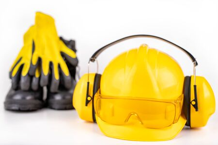

La importancia de usar implementos de seguridad
En la construcción y el bricolaje, la seguridad nunca debe pasarse por alto. Los accidentes domésticos y laborales más comunes ocurren por no utilizar la protección adecuada. En FerreNova siempre recomendamos a nuestros clientes invertir en implementos básicos de seguridad antes de comenzar cualquier proyecto.
- Casco de seguridad: protege de caídas de objetos o golpes en la cabeza.
- Guantes resistentes: evitan cortes y mejoran el agarre de herramientas.
- Gafas protectoras: indispensables al cortar, taladrar o trabajar con químicos.
- Zapatos de seguridad: con punta de acero para prevenir lesiones en pies.
- Mascarilla con filtro: útil para polvo, pintura o ambientes con partículas.
Usar estos implementos no solo protege tu salud, también garantiza que el trabajo se realice con mayor confianza y eficiencia. Recuerda: la seguridad es la mejor inversión en cualquier proyecto.
Volver